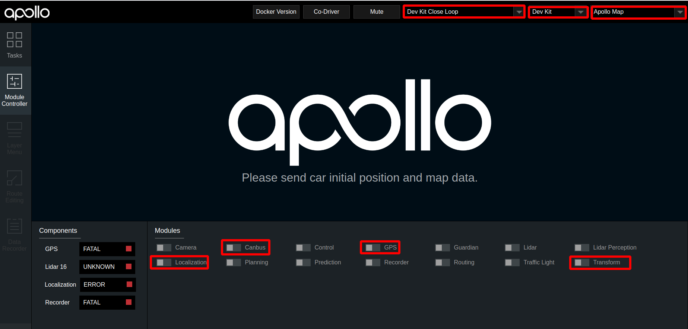
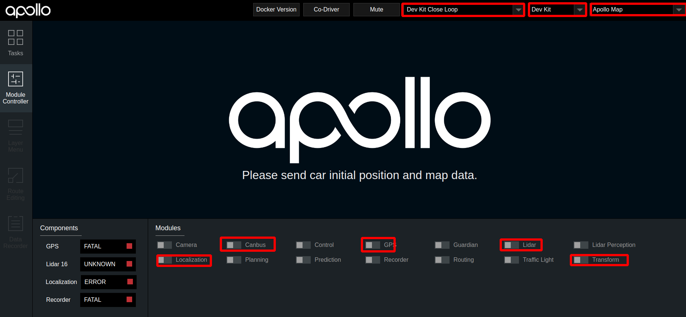
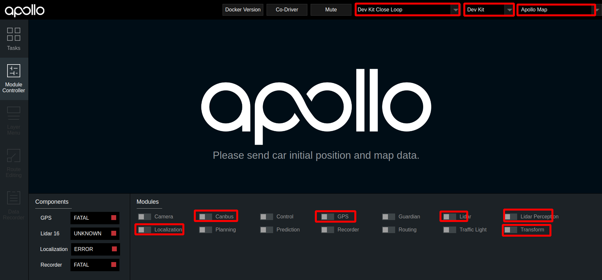
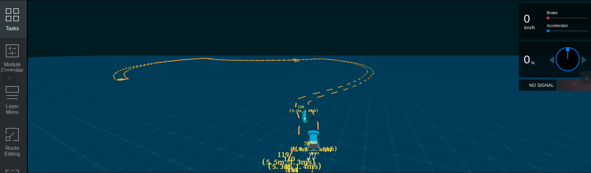
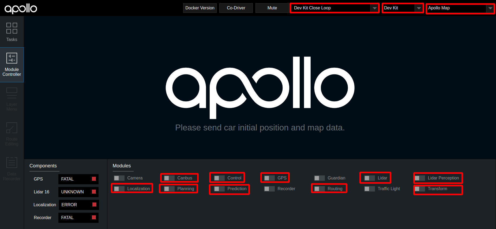
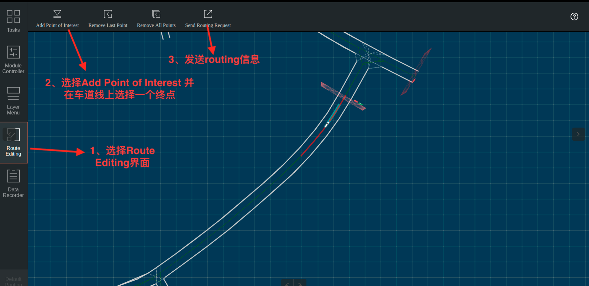
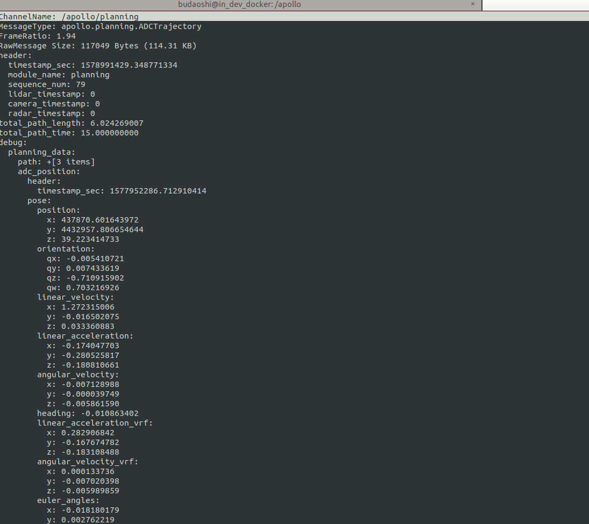

基于激光雷达的封闭园区自动驾驶搭建–自动驾驶演示¶
概览¶
该用户手册旨在帮助用户完成基于Lidar感知的封闭园区自动驾驶。为了方便用户快速实现基于lidar的封闭园区自动驾驶演示，我们提供了Dev kit Closeloop模式，建议用户在进行基于lidar的封闭园区自动驾驶演示时使用该模式， 除此之外建议使用Dev Kit Debug模式。本文将以Dev kit Closeloop模式进行说明，如果用户选择使用Dev Kit Debug模式，操作方法相同。
前提条件¶
正确完成了封闭园区自动驾驶搭建–规划适配。
确保在道路平整、车少人少等相对安全的情况下实验。
确保至少两人操作，一人操作工控机，一人操作遥控器，做好随时接管准备。
启动流程¶
1. 启动can卡¶
进入can卡目录启动can卡，用以下命令启动
cd ~/SocketCan/
bash start.sh
2. 编译项目，启动Dreamview¶
进入docker环境，用gpu编译项目，启动Dreamview
cd apollo
bash docker/scripts/dev_start.sh
bash docker/scripts/dev_into.sh
bash apollo.sh build_opt_gpu
bash scripts/bootstrap.sh
3. 启动所需模块¶
在浏览器中打开
(http://localhost:8888)，选择模式为Dev Kit Debug， 根据车辆铭牌信息选择对应的车型(详情见下表)，选择对应的虚拟车道线或高精地图，在Module Controller标签页启动Canbus、GPS、Localization、Transform模块。铭牌信息
车型选择
Apollo D-KIT Lite
dev_kit
Apollo D-KIT Standard
dev_kit_standard
Apollo D-KIT Advanced(NE-S)
dev_kit_advanced_ne-s
Apollo D-KIT Advanced(SNE-R)
dev_kit_advanced_sne-r

定位模块启动后，需要接收定位数据，需要等待约1分钟左右。打开新的终端，并使用
bash docker/scripts/dev_into.sh命令进入docker环境，在新终端中输入cyber_monitor命令查看tf、tf_static、/apollo/localization/pose数据，这三个数据在cyber_monitor中均显示为绿色代表定位模块启动成功
在dreamview中启动
lidar模块
4. 检查lidar数据是否正确¶
使用
cyber_monitor，查看激光雷达数据是否正常输出，并使用上下方向键选择channel，使用右方向键查看channel详细数据，数据无异常则说明激光雷达启动成功。(关于cyber_monitor更详细使用，请参考CyberRT_Developer_Tools)单激光雷达用户用户，请检查如下channel是否正常输出
序号
channel
帧率
1
/apollo/sensor/lidar16/PointCloud210Hz
2
/apollo/sensor/lidar16/Scan10Hz
3
/apollo/sensor/lidar16/compensator/PointCloud210Hz

三激光雷达用户用户，请检查如下channel是否正常输出
序号
channel
帧率
1
/apollo/sensor/lidar16/back/PointCloud210Hz
2
/apollo/sensor/lidar16/left/PointCloud210Hz
3
/apollo/sensor/lidar16/right/PointCloud210Hz
4
/apollo/sensor/lidar16/fusion/PointCloud210HZ
5
/apollo/sensor/lidar16/compensator/PointCloud210Hz
5. 检查各模块channel是否正确¶
在docker中输入cyber_monitor命令并检查以下channel（使用上下方向键选择channel，使用右方向键查看channel详细信息）：
单激光雷达用户用户，请检查如下channel是否正常输出
channel_name |
检查项目 |
|---|---|
|
确保能正常输出数据 |
|
确保能正常输出数据、 |
|
确保能正常输出数据 |
|
确保能正常输出数据 |
|
确保能正常输出数据 |
|
确保能正常输出数据 |
|
确保能正常输出数据 |
|
确保能正常输出数据 |
|
确保能正常输出数据 |
三激光雷达用户用户，请检查如下channel是否正常输出
channel_name |
检查项目 |
|---|---|
|
确保能正常输出数据 |
|
确保能正常输出数据、 |
|
确保能正常输出数据 |
|
确保能正常输出数据 |
|
确保能正常输出数据 |
|
确保能正常输出数据 |
|
确保能正常输出数据 |
|
确保能正常输出数据 |
|
确保能正常输出数据 |
|
确保能正常输出数据 |
|
确保能正常输出数据 |
6. 启动Lidar感知¶
确认各模块正常启动且channel输出正常后，在DreamView上启动Lidar Perception，使用cyber_monitor查看/apollo/perception/obstacles是否正常输出

7. 验证Lidar感知¶
在DreamView上启动Perception模块，使用cyber_monitor查看/apollo/perception/obstacles是否正常输出，查看车前方10米处运动的人或者自行车（自行车上要有人），在DreamView上查看障碍物颜色以及位置速度信息（自行车青蓝色，行人黄色，车辆绿色），如下图所示：

/apollo/perception/obstacles的数据如下图所示：


确保在DreamView上能看到障碍物且/apollo/perception/obstacles有障碍物信息。
8. 启动 Canbus、Planning、Prediction、Routing、Control模块¶
在Module Controller标签页启动Planning、Prediction、Routing、Control模块。 
在Routing Editor标签中点击Add Point of Interest按钮添加一个point， 然后选择Send Routing Request按钮发送添加的routing点

9. 验证Planning、Prediction、Routing、Control模块是否启动成功¶
从DreamView中查看会出现一个蓝色的线 以及一个红色的stop标志。如下图所示：
 在车前方存在人或者自行车（车上有人）时，在task标签页查看planning轨迹线，正常情况下planning会重新规划轨迹，如下图所示：
在车前方存在人或者自行车（车上有人）时，在task标签页查看planning轨迹线，正常情况下planning会重新规划轨迹，如下图所示：

在docker环境中输入命令cyber_monitor并查看planning channel信息：

如果出现上图所示轨迹线和topic信息，表示规划模块适配和开环测试通过，否则继续查看log信息进行调试。
10. 启动自动驾驶¶
在附近没有人员和车的情况下，遥控器下放权限并在task标签页中点击start auto使车进入自动驾驶状态，在车自动驾驶这个过程中做好随时用遥控器接管确保安全的准备。
常见问题¶
1. 自动驾驶过程中车轮来回摆动，有画龙现象¶
这种情况一般是车辆动力学标定没有做好，建议重新进行动力学标定
2. 车辆换道、停止等效果不理想¶
在保证感知、定位稳定的前提下，可以尝试修改planning配置文件中的相关参数进行调整，详情参考封闭园区自动驾驶搭建–规划适配